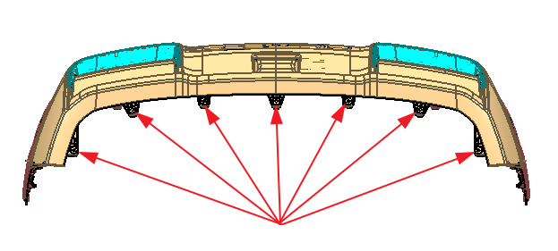
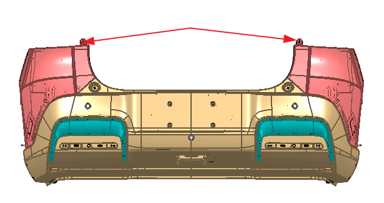
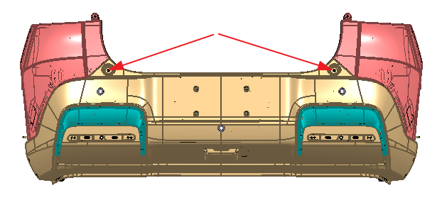
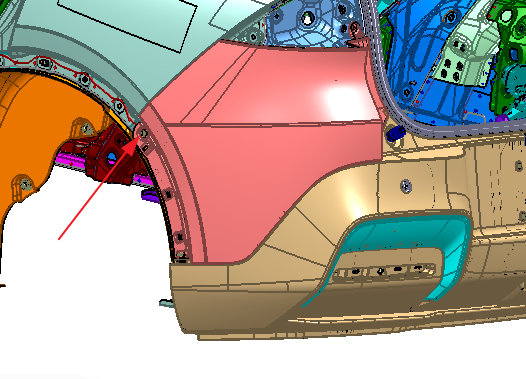
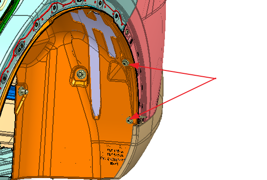
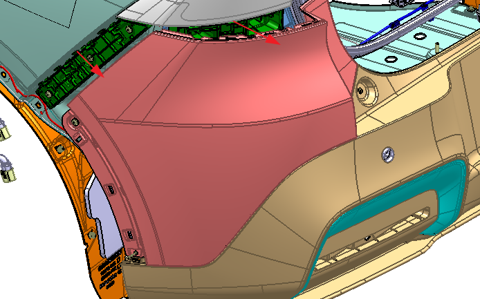
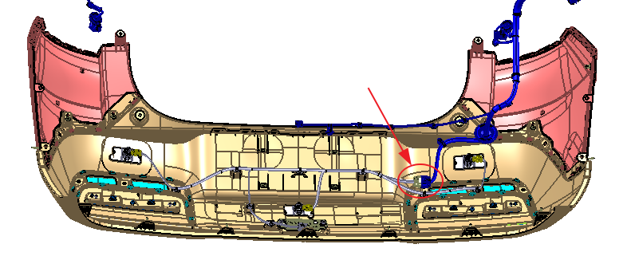

Снятие
Демонтировать облицовочную панель узла заднего комбинированного фонаря I (левого/правого), см. Задние комбинированные фонари;
Демонтировать задний отрезок колесной арки (левой/правой), см. Снятие и установка передней и задней колесных арок;
С помощью торцевой головки № 10 выкрутить 7 болтов M6 на нижней стороне заднего бампера;

С помощью торцевой головки № 10 выкрутить два болта M6 в верхней части желоба для стока воды заднего бампера;

С помощью насадки T30 выкрутить два болта M6 в нижней части желоба для стока воды заднего бампера;

С помощью крестовой отвертки выкрутить по 1 саморезу с обеих сторон в местах прилегания заднего бампера к боковинам кузова;

С помощью крестовой отвертки выкрутить по 2 составных пистона с обеих сторон в местах прилегания заднего бампера к подкрылкам

Вручную вытянуть задний бампер в направлении стрелки, симметрично с обеих сторон;

Отсоединить разъем жгута проводов заднего бампера от главного жгута проводов, с помощью съемника фиксаторов снять фиксаторы жгута проводов и заднего бампера, снять узел заднего бампера, здесь рекомендуется участие 2 человек;

Демонтаж датчика помощи при парковке: см. Установка и Снятие датчика системы автоматической парковки;
Демонтаж узла заднего комбинированного фонаря III: см. Задние комбинированные фонари;
Демонтаж радар миллиметрового диапазона: см. Радар миллиметрового диапазона переднего обзора в сборе
Установка
Установка выполняется в порядке, обратном снятию.